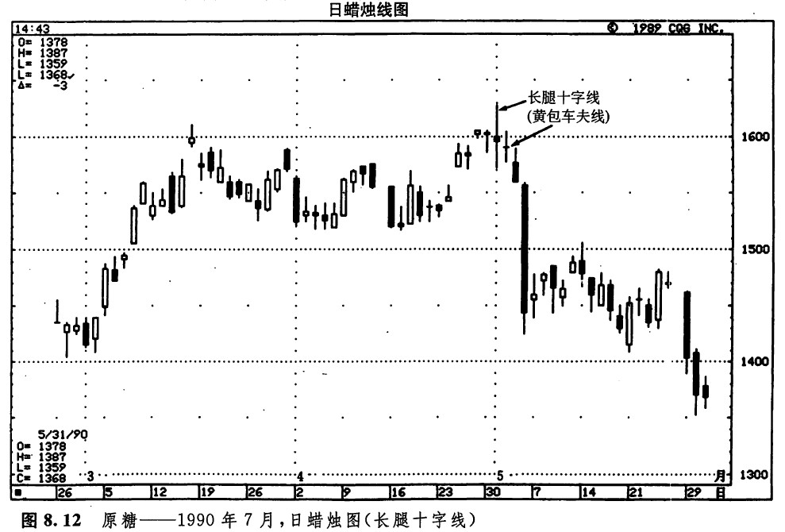
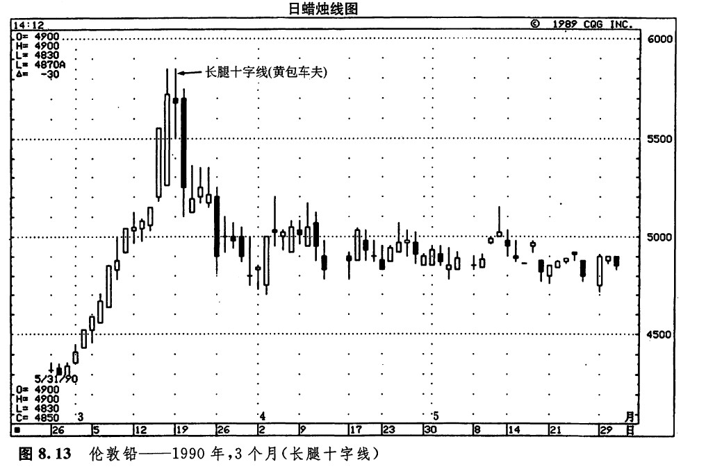
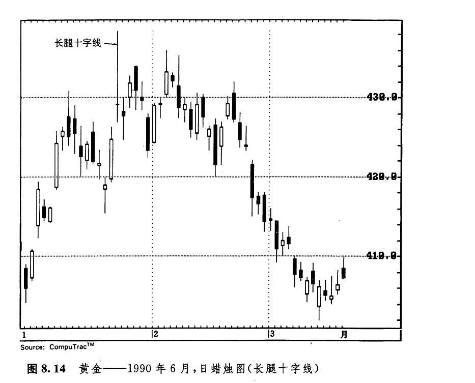

位于市场顶部的长腿十字线是一种特别重要的十字线。如图8.12所示，这类十字线具有长长的上影线和下影线，鲜明地表露出市场举棋不定的心理状态。在形成长腿十字线的交易日中，市场先是猛烈地上推、后是急剧地下滑（或者反过来），最后到收市时，其收市价处在与开市价同样的水平，或者与之非常接近。如果当日的开市价和收市价正好处在全日价格范围的中点，那么这种蜡烛线就称为黄包车夫（线）。如果某根非十字线的蜡烛线具有很长的上影线，或者具有很长的下影线，并且其实体较小，这种蜡烛钱就称为风高浪大线。如果出现了一群风高浪大线，也构成了一种反转形态。对日本分析师来说，非常长的上影线或非常长的下影线的形成——借用他们的话来描述——就表示市场“失去了方向感”。
如图8.12所示，从4月底到5月初的交易过程形成了一系列十字线，或近似十字线的蜡烛线。在上涨行情之后出现这群小实体，是市场不健康的标志。由此显示，市场已经疲惫不堪。在上涨行情中，我们一般希望看到买方占据主动。这里的长腿十字线（在本例中，是两根黄包车夫线）构成了一个重大的危险信号（虽然在第一个黄包车夫线上，开市价与收市价并不严格处在同一水平，但两者是足够接近的，因而可以看成一根十字线）。这些长腿十字线反映市场已经“失去了方向感”。这群小实体蜡烛线组成了市场的一个主要顶部过程。看着这群疲软的蜡烛线悬挂在市场的上方，我们或许可以开个玩笑，称之为“下跌吊灯形态”。

如图8.13所示，其中的长腿十字线强烈地预示着市场顶部的来临（在这根蜡烛线上，收市价与开市价也是充分接近的，足以视为一根十字线）。同时，这根长腿十字线还与其他蜡烛线一道组成了一个孕线形态和一个平头顶部形态。这些技术因素汇集在一起，构成了说服力极强的技术线索，市场当前的最高处就在眼前。在如图8.14所示的黄金市场上，当1月里的长腿十字线出现后，市场就达到了一个价格高峰。接下来，2月初的几根长长的上影线证实了由该长腿十字线形成的阻挡水平。


下一篇：墓碑十字线
上一篇：出现在长长的白色蜡烛线之后的十字线